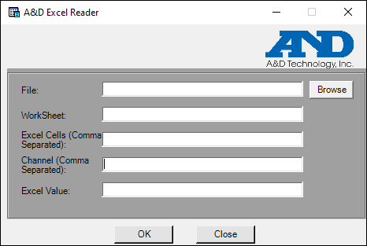
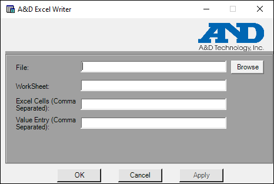

iTest User's Guide
The Excel Reader utility was designed to access an Excel spreadsheet, discover values based on given cell coordinates, and write the discovered values to iTest channels in the RDB. The Excel Writer utility was designed to access an Excel spreadsheet and populate one or more cells in a worksheet with iTest channel values from the RDB.
iTest includes the iTestExcel.py Python script to execute the read and write functions for a single cell similar to the Excel Reader and Excel Writer utilities. For more information, refer to the Reading and Writing to Files documentation.
The Excel Reader utility can either be used by accessing its GUI or from a command line entry. The GUI will display the read Excel value. Both Excel files with the .xls and .xlsx file extensions are supported.
A&D Excel Reader GUI

Command Line
excelread -f <file> -s <sheet> -c <coordinate(s)> <channel(s)>
Parameters
-f file: The fully qualified filepath and filename of the Excel spreadsheet to be accessed. Accessing read-only files and folder locations is supported.
-s sheet: The name of a single worksheet found in the Excel file.
-c coordinate(s): One or more cell coordinates in a comma-separated list to draw values from. The cell coordinates are specified in A1 notation (e.g. A1, B2, etc...). The use of R1C1 notation is not supported.
channel(s): One or more iTest channels, in a comma-separated list, to store the retrieved values from the Excel spreadsheet.
Example
ExcelRead -f C:\Spreadsheet.xls -s Sheet1 -c A1,A2,A3,B1,B2 voTest1,voTest2,voTest3,voTest4,voTest5Limitations
The Excel Writer utility can either be used by accessing its GUI or from a command line entry. Both Excel files with the .xls and .xlsx file extensions are supported.
A&D Excel Writer GUI

Command Line
excelwrite -f <file> -s <sheet> -c <coordinate(s)> <channel(s)>
Parameters
-f file: The fully qualified filepath and filename of the Excel spreadsheet to be updated.
-s sheet: The name of a single worksheet found in the Excel file.
-c coordinate(s): One or more cell coordinates in a comma-separated list to write values to. The cell coordinates are specified in A1 notation (e.g. A1, B2, etc...). The use of R1C1 notation is not supported.
channel(s): One or more iTest channels, in a comma-separated list, to retrieve values from and then write to the Excel spreadsheet.
Example
ExcelWrite -f C:\Spreadsheet.xls -s Sheet1 -c A1,A2,A3,B1,B2 voTest1,voTest2,voTest3,voTest4,voTest5Limitations